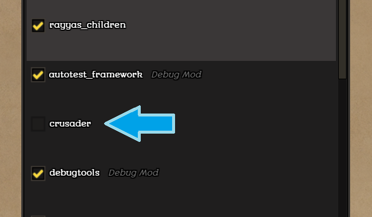
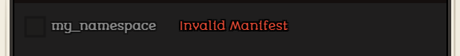
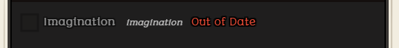
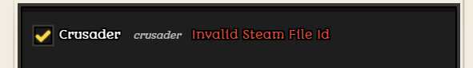

- Where to get mods
- How to install, uninstall, upload and update mods
- How to enable / disable mods
- Required mods
Where to get mods
Mods can be downloaded from the official Stonehearth Discourse, a list of the current mods can be found here: https://discourse.stonehearth.net/c/modding/current-mods. This list may not always be completely up to date, however.
For Steam users, we've enabled Steam Workshop, so you can also download mods from there.
Modders can upload their mods to whichever site they find more convenient for sharing. Most of the mods at the Discourse forums are actually hosted in free storage sites, and their download link is shared at the forums. There might be other external fan sites where people have uploaded their mods, so there's no unique place where all mods are listed, sadly.
How to install, uninstall, upload and update mods
Instructions for Steam Workshop mods.
Instructions for local mods.
How to enable / disable mods
Inside the game, you can enable / disable mods from the Mods Menu.
Click on the "Mods" button while in the Main Menu, and there will be a list with all the mods you have installed. If you're logged to Steam, there will be separate lists for Local mods, Subscribed Workshop mods, and mods that you uploaded to the Steam Workshop.
Check / uncheck them to enable / disable them. 
You will get a message next to the mod's name if there are problems with it:   
If you have a mod conflict, a popup will tell you once you start the game or the mods are reloaded.
 When you load savefiles, make sure that all the mods that were active when you saved it are enabled, otherwise you can get errors (some savefiles might not even be able to load without the corresponding mods). The game now warns you and allows you to apply the savefile's mods or to load with the current changes to the mod configuration.
When you load savefiles, make sure that all the mods that were active when you saved it are enabled, otherwise you can get errors (some savefiles might not even be able to load without the corresponding mods). The game now warns you and allows you to apply the savefile's mods or to load with the current changes to the mod configuration.
Required mods
The default mods that come with the game are stonehearth, rayyas_children, northern_alliance and radiant. They are highlighted in gray in the Mods menu.
The radiant and stonehearth mods are required, so you won't be able to disable them in the Mods menu.
If you accidentally delete any of the required mods, you'll have to redownload them for the game to work correctly.
There are other mods that come bundled with the game but are disabled by default: debugtools, autotest_framework, stonehearth_autotest, microworld and stonehearth_tests. They are tagged as Debug mods in the menu. Modders can enable them to help debugging their mods.